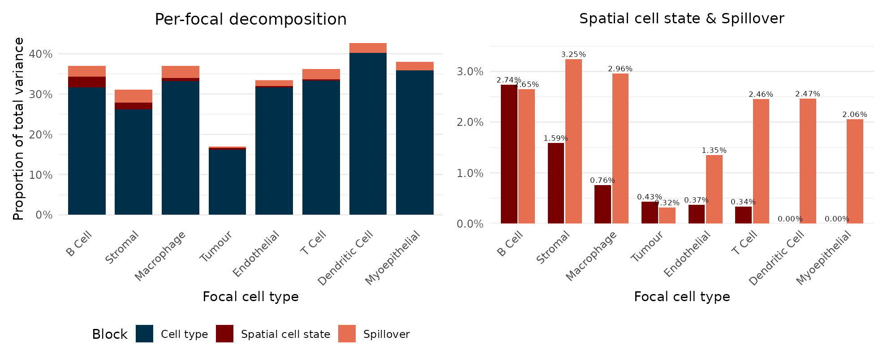
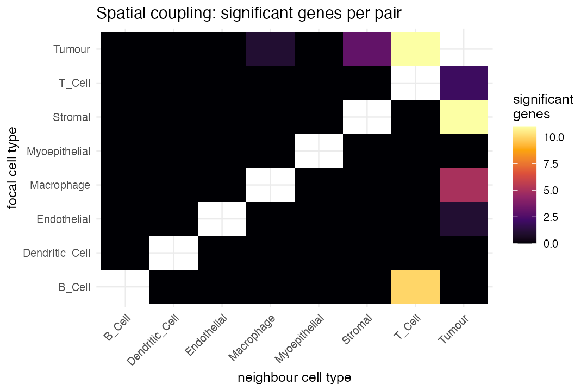
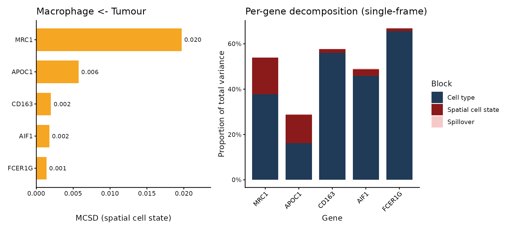
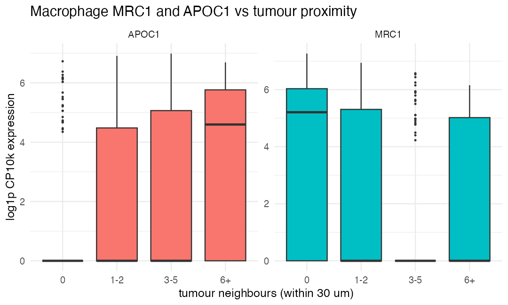

Installation
if (!require("BiocManager")) install.packages("BiocManager")
BiocManager::install("remotes")
remotes::install_github("ecool50/PACE")Introduction
PACE (Proximity-Associated Changes in Expression) is a framework for imaging-based spatial transcriptomics (such as Xenium and CosMx) that quantifies how a cell’s gene expression changes with proximity to specific neighbouring cell types. Rather than asking only which genes are spatially variable, PACE asks a directed question: when a macrophage sits next to tumour cells, which of its genes go up or down, and by how much?
PACE fits a hierarchical negative binomial mixed model with partial pooling across cell types, so that each focal-neighbour relationship borrows strength from the others and noisy pairs are regularised towards the consensus. A per-cell contamination term absorbs the short-range ambient signal that leaks between adjacent cells through segmentation error, so the estimated neighbour effect reflects biology rather than transcript misassignment.
Overview of the PACE workflow
A PACE analysis has three stages, all driven by the single call
paceFit():
- Neighbourhood construction. For every cell, a Gaussian biological kernel summarises the abundance of each neighbouring cell type, and a short-range exponential technical kernel captures the ambient contamination field.
- Model fitting. A streaming penalised quasi-likelihood fit estimates, for every gene and every focal cell type, a partially pooled slope on each neighbour type’s abundance, jointly with a per-cell contamination loading and gene-wise overdispersions. The neighbour slopes are then stabilised by multivariate adaptive shrinkage.
-
Interpretation. The fit is read out three ways:
shrunken neighbour slopes with a local false sign rate
(
neighbourSlopes()), a per-gene variance decomposition (varianceDecomposition()), and per-pair driver-score tables ranking the genes that mediate each relationship (topDrivers()).
The breast cancer dataset
The package ships a small worked example: a spatial crop of a human breast cancer Xenium section (10x Genomics; nucleus segmentation, cell types annotated with scClassify), centred on a tumour-macrophage interface. It contains 7,898 cells across eight cell types (B cell, dendritic cell, endothelial, macrophage, myoepithelial, stromal, T cell, and tumour) and a 278-gene panel, packaged as a SpatialExperiment. This region reproduces the macrophage reprogramming that PACE identifies on the full section.
library(PACE)
library(SpatialExperiment)
library(ggplot2)
library(dplyr)
library(tidyr)
spe <- readRDS(system.file("extdata", "bc_xenium_subset.rds", package = "PACE"))
spe
#> class: SpatialExperiment
#> dim: 278 7898
#> metadata(0):
#> assays(1): counts
#> rownames(278): SEC11C DAPK3 ... NOSTRIN CD1C
#> rowData names(0):
#> colnames(7898): 442 444 ... 99842 99848
#> colData names(2): cellType sample_id
#> reducedDimNames(0):
#> mainExpName: NULL
#> altExpNames(0):
#> spatialCoords names(2) : x y
#> imgData names(0):
table(spe$cellType)
#>
#> B_Cell Dendritic_Cell Endothelial Macrophage Myoepithelial
#> 330 32 499 591 47
#> Stromal T_Cell Tumour
#> 681 1076 4642Fitting the model
paceFit() reads the counts, spatial coordinates, and
cell-type labels from the SpatialExperiment and runs the
whole pipeline. On this crop it takes about half a minute.
fit <- paceFit(spe,
celltype_col = "cellType",
contamination = "percell_hc", # per-cell contamination correction
dispersion = "nb1",
verbose = FALSE)
#> - Computing 278 x 313 likelihood matrix.
#> - Likelihood calculations took 0.07 seconds.
#> - Fitting model with 313 mixture components.
#> - Model fitting took 0.10 seconds.
#> - Computing posterior matrices.
#> - Computation allocated took 0.00 seconds.
#> - Computing 278 x 92 likelihood matrix.
#> - Likelihood calculations took 0.02 seconds.
#> - Fitting model with 92 mixture components.
#> - Model fitting took 0.03 seconds.
#> - Computing posterior matrices.
#> - Computation allocated took 0.00 seconds.
#> - Computing 278 x 404 likelihood matrix.
#> - Likelihood calculations took 0.10 seconds.
#> - Fitting model with 404 mixture components.
#> - Model fitting took 0.14 seconds.
#> - Computing posterior matrices.
#> - Computation allocated took 0.00 seconds.
#> - Computing 278 x 417 likelihood matrix.
#> - Likelihood calculations took 0.10 seconds.
#> - Fitting model with 417 mixture components.
#> - Model fitting took 0.22 seconds.
#> - Computing posterior matrices.
#> - Computation allocated took 0.00 seconds.
#> - Computing 278 x 92 likelihood matrix.
#> - Likelihood calculations took 0.00 seconds.
#> - Fitting model with 92 mixture components.
#> - Model fitting took 0.03 seconds.
#> - Computing posterior matrices.
#> - Computation allocated took 0.00 seconds.
#> - Computing 278 x 391 likelihood matrix.
#> - Likelihood calculations took 0.09 seconds.
#> - Fitting model with 391 mixture components.
#> - Model fitting took 0.11 seconds.
#> - Computing posterior matrices.
#> - Computation allocated took 0.00 seconds.
#> - Computing 278 x 430 likelihood matrix.
#> - Likelihood calculations took 0.10 seconds.
#> - Fitting model with 430 mixture components.
#> - Model fitting took 0.14 seconds.
#> - Computing posterior matrices.
#> - Computation allocated took 0.00 seconds.
#> - Computing 278 x 628 likelihood matrix.
#> - Likelihood calculations took 0.16 seconds.
#> - Fitting model with 628 mixture components.
#> - Model fitting took 0.19 seconds.
#> - Computing posterior matrices.
#> - Computation allocated took 0.00 seconds.
#> - Computing 278 x 404 likelihood matrix.
#> - Likelihood calculations took 0.10 seconds.
#> - Fitting model with 404 mixture components.
#> - Model fitting took 0.34 seconds.
#> - Computing posterior matrices.
#> - Computation allocated took 0.01 seconds.
#> - Computing 278 x 590 likelihood matrix.
#> - Likelihood calculations took 0.15 seconds.
#> - Fitting model with 590 mixture components.
#> - Model fitting took 0.66 seconds.
#> - Computing posterior matrices.
#> - Computation allocated took 0.01 seconds.
fit
#> class: PACEFit
#> cell types (8): B_Cell, Dendritic_Cell, Endothelial, Macrophage, Myoepithelial, Stromal, T_Cell, Tumour
#> kernels: h_bio = 30 um, h_tech = 5 um | contamination: percell_hc; dispersion: nb1
#> pipeline: model -> shrink -> decompose -> drivers
#> neighbour slopes: 17792 rows (60 at lfsr < 0.05)The pipeline step by step
paceFit() is a convenience wrapper. The same result is
produced by calling each step explicitly, which lets you inspect the
fitted model and re-run the downstream layers (shrinkage, decomposition,
drivers) without refitting:
fit <- paceModel(spe, celltype_col = "cellType") |> # fit the mixed model
paceShrink() |> # shrink neighbour slopes
paceDecompose(spe) |> # variance decomposition
paceDrivers() # per-pair driver scoresThe fit-construction primitives expose the neighbourhood and contamination field directly, for inspection independently of a fit:
kern <- buildNeighbourhood(spe, "cellType") # Gaussian K_bio + technical K_tech
W <- ambientField(spe, "cellType") # sparse E^tech contamination field
anchorGenes(fit, spe) # per-cell-type contamination anchorsVariance decomposition
plotDecomposition() shows, for each focal cell type, the
share of expression variance attributable to cell-type identity, spatial
cell state (proximity effects), and contamination (spillover), pooled
over genes. The left panel is the full stacked bar; the right zooms in
on the two small spatial components.
plotDecomposition(fit)
Beyond the dominant cell-type identity component, macrophages,
stromal and myoepithelial cells carry the largest spatial cell-state
contributions. The underlying per-gene table is available with
varianceDecomposition(fit).
Pairwise spatial interactions
plotPairHeatmap() gives the percentage of each focal
type’s total variance contributed by spatial interaction with each
neighbour, computed as the focal’s spatial share split across neighbours
by a normalised Pratt attribution. Tumour as a
neighbour drives the strongest spatial signal across the
microenvironment.
plotPairHeatmap(fit)
Macrophage–tumour drivers
plotDrivers() ranks the genes mediating a relationship
by a driver score (MCSD, combining the shrunken slope, its cell-type
specificity, and its expression level), alongside their per-gene
single-frame decomposition. For the macrophage-tumour pair, the top
drivers are the tissue-resident marker MRC1 (CD206),
reduced near tumour, and the lipid-associated marker
APOC1, elevated near tumour.
plotDrivers(fit, "Macrophage", "Tumour")
The shrunken slopes confirm the opposing directions:
neighbourSlopes(fit) |>
filter(focal == "Macrophage", neighbour == "Tumour",
gene %in% c("MRC1", "APOC1")) |>
select(gene, estimate_shrunk, lfsr)
#> gene estimate_shrunk lfsr
#> 1 APOC1 0.1299349 2.092082e-16
#> 2 MRC1 -0.1499909 1.354472e-14Visualising the proximity effect
plotProximity() bins each macrophage by its number of
tumour neighbours (within 30 um) and shows each gene’s raw counts per
bin. Because these genes are zero-inflated the box median sits at zero
in most bins, so the per-bin mean is overlaid as a point to make the
trend explicit. Macrophage MRC1 falls and APOC1 rises with tumour
proximity.
plotProximity(fit, spe, c("MRC1", "APOC1"), "Macrophage", "Tumour")
Biological interpretation
On this section PACE recovers a coordinated shift in macrophage state at the tumour interface: the tissue-resident marker MRC1 (CD206) is reduced and the lipid-associated, immunosuppressive marker APOC1 is elevated in macrophages near tumour cells. Because PACE separates this proximity effect from the transcript contamination that would otherwise inflate tumour-marker signal in the macrophages, the drivers it promotes are genuine macrophage genes rather than tumour genes bleeding across cell boundaries.
Session info
sessionInfo()
#> R version 4.6.1 (2026-06-24)
#> Platform: x86_64-pc-linux-gnu
#> Running under: Ubuntu 24.04.4 LTS
#>
#> Matrix products: default
#> BLAS: /usr/lib/x86_64-linux-gnu/openblas-pthread/libblas.so.3
#> LAPACK: /usr/lib/x86_64-linux-gnu/openblas-pthread/libopenblasp-r0.3.26.so; LAPACK version 3.12.0
#>
#> locale:
#> [1] LC_CTYPE=C.UTF-8 LC_NUMERIC=C LC_TIME=C.UTF-8
#> [4] LC_COLLATE=C.UTF-8 LC_MONETARY=C.UTF-8 LC_MESSAGES=C.UTF-8
#> [7] LC_PAPER=C.UTF-8 LC_NAME=C LC_ADDRESS=C
#> [10] LC_TELEPHONE=C LC_MEASUREMENT=C.UTF-8 LC_IDENTIFICATION=C
#>
#> time zone: UTC
#> tzcode source: system (glibc)
#>
#> attached base packages:
#> [1] stats4 stats graphics grDevices utils datasets methods
#> [8] base
#>
#> other attached packages:
#> [1] tidyr_1.3.2 dplyr_1.2.1
#> [3] ggplot2_4.0.3 SpatialExperiment_1.22.0
#> [5] SingleCellExperiment_1.34.0 SummarizedExperiment_1.42.0
#> [7] Biobase_2.72.0 GenomicRanges_1.64.0
#> [9] Seqinfo_1.2.0 IRanges_2.46.0
#> [11] S4Vectors_0.50.1 BiocGenerics_0.58.1
#> [13] generics_0.1.4 MatrixGenerics_1.24.0
#> [15] matrixStats_1.5.0 PACE_0.99.0
#> [17] BiocStyle_2.40.0
#>
#> loaded via a namespace (and not attached):
#> [1] tidyselect_1.2.1 viridisLite_0.4.3 farver_2.1.2
#> [4] S7_0.2.2 fastmap_1.2.0 digest_0.6.39
#> [7] lifecycle_1.0.5 invgamma_1.2 magrittr_2.0.5
#> [10] dbscan_1.2.5 compiler_4.6.1 rlang_1.3.0
#> [13] sass_0.4.10 tools_4.6.1 yaml_2.3.12
#> [16] knitr_1.51 S4Arrays_1.12.0 labeling_0.4.3
#> [19] DelayedArray_0.38.2 plyr_1.8.9 RColorBrewer_1.1-3
#> [22] abind_1.4-8 BiocParallel_1.46.0 withr_3.0.3
#> [25] purrr_1.2.2 desc_1.4.3 grid_4.6.1
#> [28] scales_1.4.0 cli_3.6.6 mvtnorm_1.4-1
#> [31] rmarkdown_2.31 ragg_1.5.2 otel_0.2.0
#> [34] rjson_0.2.23 cachem_1.1.0 stringr_1.6.0
#> [37] assertthat_0.2.1 parallel_4.6.1 BiocManager_1.30.27
#> [40] XVector_0.52.0 vctrs_0.7.3 Matrix_1.7-5
#> [43] jsonlite_2.0.0 bookdown_0.47 patchwork_1.3.2
#> [46] mixsqp_0.3-54 irlba_2.3.7 systemfonts_1.3.2
#> [49] magick_2.9.1 jquerylib_0.1.4 glue_1.8.1
#> [52] pkgdown_2.2.1 codetools_0.2-20 stringi_1.8.7
#> [55] gtable_0.3.6 rmeta_3.0 tibble_3.3.1
#> [58] pillar_1.11.1 htmltools_0.5.9 truncnorm_1.0-9
#> [61] R6_2.6.1 mashr_0.2.79 textshaping_1.0.5
#> [64] evaluate_1.0.5 lattice_0.22-9 SQUAREM_2026.1
#> [67] ashr_2.2-63 bslib_0.11.0 Rcpp_1.1.2
#> [70] SparseArray_1.12.2 xfun_0.60 fs_2.1.0
#> [73] pkgconfig_2.0.3